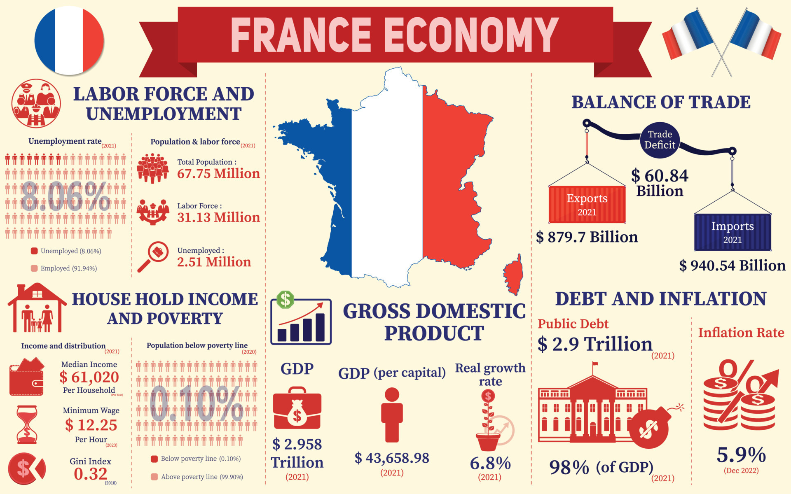
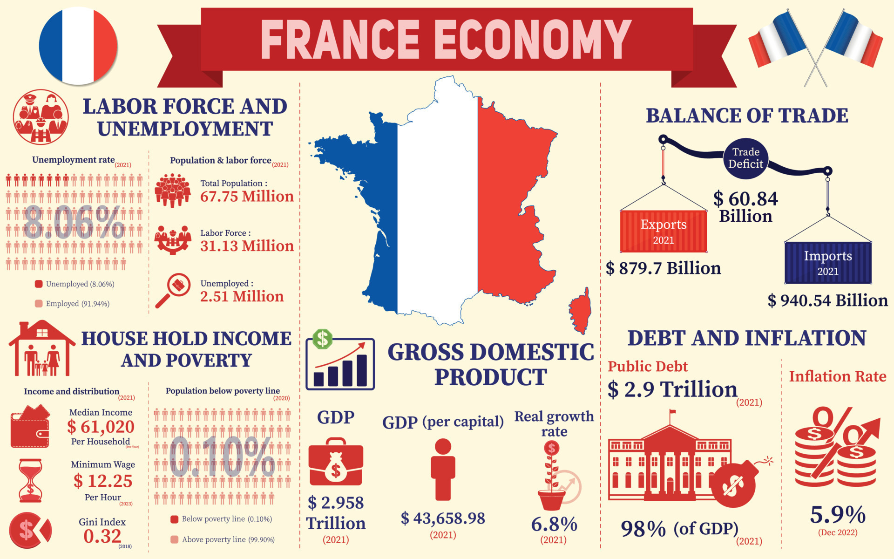

Fransiya haqida umumiy ma'lumotlar
Fransiya (fransuzcha talaffuzi: [fʁɑ̃s] tingla), rasmiy nomi Fransiya Respublikasi (fransuzcha: République française)[1] — Gʻarbiy Yevropadagi davlat. Gʻarbda va shimolda Atlantika okeani hamda La-Mansh boʻgʻozi, janubida Oʻrta dengiz bilan oʻralgan. Maydoni 674687 ming km². Aholisi 68 088 924 million kishi (2023). Poytaxti — Parij shahri.
Parij-Fransiyaning eng katta shahri va poytaxti hisoblanadi. Maʼmuriy jihatdan 22 region (viloyat), 96 departamentga boʻlingan. Fransiya tarkibida dengiz orti departamentlari (Gvadelupa, Martinika, Gviana, Reyunon), dengiz orti hududlari (Taiti, Yangi Kaledoniya, Fransiya Polineziyasi, Tinch okeandagi Uollis va Futuna orollari va boshqalar), hududiy birliklar (Mayotta va SenPyer va Mikelon) bor.
Fransiya — respublika, tarixda xonlik bolgan. Amaldagi konstitutsiyasi 1958-yil referendumda qabul qilingan (bir necha marta oʻzgartishlar kiritilgan). Davlat boshligʻi — prezident. U umumiy va toʻgʻridan toʻgʻri ovoz berish yoʻli bilan 5yil muddatga saylanadi va yana 1marta saylanishi mumkin. Qonun chiqaruvchi hokimiyat — parlament 2 palata (Milliy majlis va Senat)dan iborat. Ijrochi hokimiyatni prezident va Vazirlar Kengashi (hukumat) amalga oshiradi.
.

Aholisi
Aholisining 90 % dan koʻprogʻi fransuzlar; shuningdek, elzas va lotaring, katalon, breton, flamand va basklar ham yashaydi. 3,5 mln. muhojir (jazoir, portugal, italyan, ispan, arman va boshqalar) bor. 4 mln. musulmon istiqomat qiladi. Rasmiy tili — fransuz tili. Bundan tashqari, bir qancha mahalliy shevalar ham mavjud. Shahar aholisi 73 %. Aholining 80 % xristian (katolik), 5 % ga yaqini musulmon, 2 % protestant, 1 % yahudiy. Yirik shaharlari: Parij, Marsel, Lion, Tuluza, Nitssa, Nant, Strasburg, Bordo, Monpelye, Lill.

Xo'jaligi va tabiati
Fransiya — yuksak darajada rivojlangan industrialagrar mamlakat. Jahondagi eng rivojlangan yetti davlatdan biri. Yalpi ichki mahsulotda sanoatning ulushi 16,9 %, qishloq xoʻjaligi, oʻrmon, baliq xoʻjaligining ulushi 2,7 %., xizmat koʻrsatish sohasining ulushi 80,4 % ni tashkil etadi (2022).
Fransiyada foydali qazilmalardan koʻmir, temir rudasi, uran, tabiiy gaz, volfram va surma, talk xomashyosi, qoʻrgʻoshin, oltingugurt va rux bor.
Neft va gaz juda kam miqdorda.
Fransiya iqlimi qishloq xoʻjaligi uchun qulay.
Oʻrmonlar mamlakat hududining 20 % ni tashkil etadi.
Mamlakat hududining 10 % himoya ostiga olingan. Ular: milliy bogʻ (Ekren, Sevenn va boshqalar), hududiy milliy bogʻ va kichik tabiiy qoʻriqxonalar. Koʻp qoʻriqxonalar togʻlarda joylashgan (Alpdagi Vanuaz va Pelvu milliy bogʻlari, Pireneydagi Neuvyel qoʻriqxonasi).

Fransiya Sanoati
Fransiya sanoat ishlab chiqarish boʻyicha AQSH, Yaponiya va Germaniyadan soʻng dunyoda 4oʻrinni egallaydi. Asosiy ishlab chiqarish tarmoqlari: aerokosmik sanoati, mashinasozlik (aviasozlik, kemasozlik), elektron texnika, radioelektronika, qora va rangli metallurgiya, kimyo va farmatsevtika mahsulotlari, toʻqimachilik, tikuvchilik, neftni qayta ishlash, neft kimyosi kabilar. Fransiyada temir rudasi (asosan, Lotaringiyada), uran rudasi (LaKruziy, L’Ekarpyer va boshqa konlar), boksit (Var va Ero departamentlarida) va alyuminiy rudalari qazib olinadi. Lotaringiya kumir qazib chiqarishning anʼanaviy markazi hisoblanadi. Keyingi davrda mamlakat markazi va janubida kumir qazib olish birmuncha kamaydi. Nikel, kaliy tuzlari, gips, volfram va oltingugurt, bariy, kaolin, asbest, plavik shpat, oz miqdorda qoʻrgʻoshin, pyx va kumush qazib chiqariladi.
Fransiyaning janubi-gʻarbiy xududi, Landesda neft va gaz zaxiralari mavjud. Metallurgiya kombinatlarida poʻlat (LeKryozo, SentEtyen), alyuminiy (Gardann, Salendr, Noger), mis (LePale), qoʻrgʻoshin va rux (NuayelGodo, Lion, Vivye), nikel (Gavr), kobalt, volfram va boshqa eritiladi.
Kurilish materiallari, jumladan, qum, shagʻal, tosh butun Fransiya hududida qazib olinadi. „Reno“ va „Pejo“ kompaniyalari avtomobil ishlab chikaruvchi eng yirik kompaniyalardir. Avtomobil sanoati markazlari Parij, Monbelyar, Lionda joylashgan. Aviatsiyakosmos tarmoqlari (harbiy va fuqaro samolyotlari, vertolyot, dvigatellar, raketa va kosmik texnika)ning asosiy markazlari — Parij, Tuluza, Bordo. Kemasozlik rivojlangan (Nant, Dyunkerk, Marsel). Lokomotiv va vagonlar, stanok, traktor, qishloq xoʻjaligi mashinalari va boshqa ishlab chiqariladi.
Fransiya kompaniyalari mudofaa, transport mashinasozligi va boshqa tarmoqlarda oʻzining eng yangi texnologiyalari bilan mashhur. Yiliga oʻrtacha 475,6 mlrd. kVtsoat elektr energiya (shundan 3/4 qismi atom elektr styalarida) hosil qilinadi. Atom sanoatining asosiy markazlari — LeBushe, Pyerlat, Markul. Neft va neft kimyosi sanoati plastmassa, sintetik kauchuk va smola, kimyoviy tola, harbiy kimyo mahsulotlari, mineral oʻgʻit, doridarmon, upaelik va boshqa mahsulotlar ishlab chikaradi (Parij, Lion, Gavr va Marsel).
Yengil sanoatning asosiy tarmogʻi — toʻqimachilik boʻlib, Parij, Lill, Armantyer, RubeTurkuen, Myuluz, Epinal, Truada yirik ip gazlama, jun, zigir, jut, trikotaj korxonalari mavjud. Toʻqimachilik va galantereya, poyabzal, oziq-ovqat sanoati rivojlangan. Konyak, vino, likyor, shampan vinolari dunyoda nom chikargan.
Qishloq xoʻjaligiga yaroqli yerlar mamlakat hududining 35,6 % ni tashkil qiladi, shundan 40 % yaylov va pichanzor. Chorvachilik qishloq xoʻjaligining yetakchi tarmogʻi (mahsulot qiymatining 55 %). Qoramol, qoʻy, choʻchqa, parranda boqiladi. Asosiy qishloq xoʻjaligi ekini boʻlgan bugʻdoy Shimoliy Fransiya pasttekisligida ekiladi. Arpa va makkajoʻxori katta ahamiyatga ega. Markaziy Fransiya massivining unumsiz yerlarida javdar, Rona deltasida sholi yetishtiriladi. Texnika ekinlaridan qand lavlagi, zigʻir, xmel va tamaki muhim oʻrin oladi.
Bordo departamenti hamda Rona, Sona, Garonna, Dordoni va Luara dare vodiylarida tokzorlar katga maydonni egallaydi. Sabzavotchilik, bogʻdorchilik, gulchilik rivojlangan. Oʻrmonlarda yogoch tayyorlanadi. Atlantika okeani va Oʻrta dengizda baliq ovlanadi.
Fransiya YaIM va uning mazmuni
 

Fransiyada 1991-2022 yillarda ishsizlik darajalari va 2018-2028 yillarda aholi soni (prognoz)


Ushbu grafikda inflatsiya darajasi aks etgan bo'lib, ko'rsatkichlar asosiy jahon standartlariga muofiq o'tgan yilning mos davriga nisbatan olingan.
Turkiyaning yaqin tarixdan (1960-yildan) to hozirga qadar iqtisodiy o'sish (kishi boshiga YaIM) ko'rsatkichlari
Ushbu grafikdagi ko'rsatkichlar Fransiya iqtisodiyotining umumiy ko'rinishini ifodalaydi.
Fransiya transporti
Temir yoʻl uzunligi 42000 km. Soatiga 300 km yoʻl bosadigan tez yurar poyezd Parij va Fransiyaning boshqa shaharlarini Angliya, Belgiya, Niderlandiya, Germaniya bilan bogʻlaydi. Ichki yuklarning aksar qismi avtomobilda tashiladi.
Avtomobil yoʻllari uz. 812,7 ming km. Parij, London, Marsel, Nitssa, Strasburg va Tuluzada yirik aeroportlar bor. Sena, Reyn daryolarida, Sena—Sevr, Marna—Reyn kanallarida kema qatnaidi. Dengiz savdo flotining tonnaji 4981 ming t dedveyt. Yirik dengiz portlari: Marsel, Gavr, Dyunkerk, Ruan, Nant, SenNazer, Bordo. Ichki suv yoʻllari uz. 8,6 ming km. Neft va boshqa suyuq mahsulotlarning bir qismi quvurlar orqali tashiladi.
Fransiya tashqi savdosi
Fransiya chetga elektron va maxsus mashina, uskunalar, samolyot, temir va poʻlat, ofis mashinalari, don mahsulotlarini qayta ishlash vositalari, alkogolli ichimliklar, gazlama, pishloq, goʻsht, sut, kiyimkechak, poyabzal, upaelik va hokazolarni chiqaradi. Chetdan yonilgʻi, sanoat xom ashyolari, transport jihozlari, mashinalar, isteʼmol mollari keltiriladi.
Tashqi savdoda Yevropa Ittifoqi mamlakatlari: Belgiya, Germaniya, Italiya, Lyuksemburg, Niderlandiya, Buyuk Britaniya, Ispaniya, shuningdek, AQSH va Yaponiya bilan hamkorlik qiladi. Fransiyada xalqaro turizm rivojlangan:-yiliga 50 mln. kishi kelibketadi. Pul birligi — frank.

Fransiyada haftalik o'rtacha ish soati

Frantsiyada asosiy ishda ishlagan o'rtacha haftalik soatlar 2021 yilda oldingi 2020 yilga nisbatan sezilarli o'zgarishlarni ko'rmadi va taxminan 36,1 soatni tashkil etdi. 2020 yilga nisbatan oʻrtacha haftalik ish vaqti 0,4 soatga (-1,1 foiz) sezilarli darajada kamaymadi. Kuzatilgan davr mobaynida o'rtacha haftalik ish vaqti o'zgarib turdi.
Bog'liq bandlik - bu o'z-o'zini ish bilan ta'minlovchi yoki vaqtinchalik ishchilar emas, balki ish haqi va maosh oladigan ishchilar tomonidan amalga oshiriladigan har qanday ish.
Sogʻliqni saqlash sohasi kasalxonalardan va „shahar tibbiyoti“ deb ataluvchi erkin tibbiy muassasalardan iborat. Tibbiyot tarmogʻida 2 mln.ga yaqin kishi ishlaydi (60 mingi kasalxonalarda). Davlat sogʻliqni saklash tizimi rivojlangan.
Fransiyada profilaktik tibbiyotning ahamiyati katta. Bu — tugishgacha va undan keyingi davrlarda ayollarni nazorat qilib, tadqiqotlar olib borish va ayrim koʻp tarqalgan kasalliklar (asosan, chekish, alkogolizm, OITSga qarshi kurash va hokazo) boʻyicha ish joylarida va axborot kompaniyalarida konsultatsiyalar olib borish va hokazolardir. Shu tufayli Fransiyada bolalar oʻlimi dunyoda eng past darajada. Vrachlar 33 universitetning tibbiyot f tlarida tayyorlanadi.